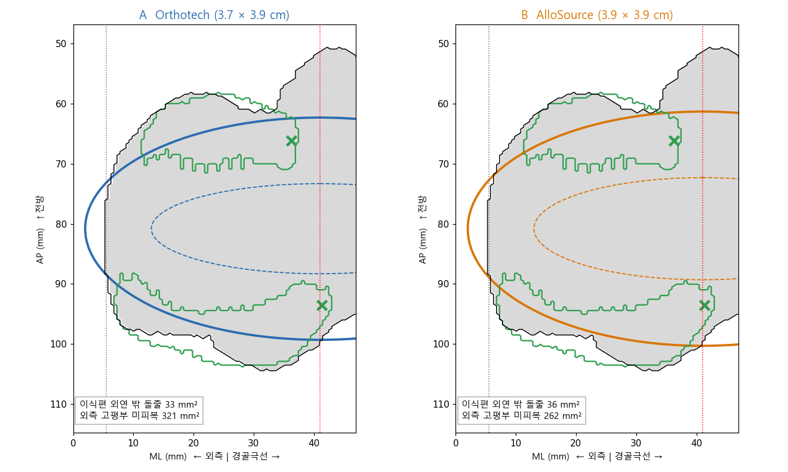

외측 반월상연골 동종이식 — 이식편 후보 비교
36세 남성 · 좌측 · discoid 반월상연골 절제술(20년 전) 및 ACL 재건술(6년 전) 후 · 재치환 ACL 재건술 + LM MAT(soft tissue 고정) 예정
권장: B (AlloSource, fresh-frozen aseptic)
- ML 폭은 두 이식편이 39 mm로 같다. AP 길이만 A 37 mm, B 39 mm로 2 mm 차이가 나며, 이는 MRI 절편 간격(2 mm) 수준이다.
- 3D 가상 거치에서 경골 밖 돌출은 거의 같고(33 vs 36 mm²), 외측 고평부 피복은 B가 더 넓다(미피복 321 → 262 mm²). 환자의 외측 구획이 커서(잔존 연골 외연 AP 45 mm) B의 추가 2 mm는 해부학적으로 수용된다.
- A는 라벨상 방사선 멸균이고 B는 무균 처리(말단 방사선 멸균 없음)이다. 크기 차이가 작으므로 이 처리 방식 차이가 선택을 가른다.
- soft tissue 고정이라 골편은 제거하므로 골편 크기는 비교에서 뺐다.
1. 이식편 라벨 정보
| A · Orthotech | B · AlloSource (JRF Ortho) | |
|---|---|---|
| 조직 | LT. Tibia Plateau (외측 반월상연골 + 골편) | Lateral Meniscus, Left |
| 반월상연골 AP 길이 | 37 mm (D) | 39 mm |
| 반월상연골 ML 폭 | 39 mm (B) | 39 mm |
| 골편 (soft tissue 고정 시 제거) | 47 × 23 mm (E, F) | 51 × 23 mm (폭 19 mm) |
| 처리 · 멸균 | 과산화수소·알코올 소독, 방사선 멸균 | Fresh frozen, aseptically processed |
A 라벨의 A = 9.7 cm는 37 × 39 mm 반타원의 외연 호 길이(계산값 약 9.3 cm)와 맞아서 바깥 테두리 길이로 해석했다. 그래서 D = 3.7 cm를 AP 길이, B = 3.9 cm를 ML 폭으로 보았다. 조직은행에 확인이 필요하다.
2. 환자 계측 (MRI 3D 복원)
시상면 PD FS 2 mm 영상을 KneeMRI_Seg13(nnU-Net 13-class)으로 분할하고, RECON으로 0.5 mm 간격까지 보간해 3D로 복원했다. 계측은 외측 고평부 관절면 3 mm 아래 단면에서 했다.
| 항목 | 값 | 비고 |
|---|---|---|
| 외측 경골극 정점 → 외측 고평부 경계 (ML) | 35.5 mm | Pollard 폭 추정치 |
| 외측 고평부 최대 AP | 48.5 mm | × 0.7 = Pollard 길이 추정치 33.9 mm |
| 잔존 외측 반월상연골 외연 AP / ML | 45.3 / 35.5 mm | 전·후각은 남아 있고 체부는 대부분 절제됨 |
| 잔존 전각 끝 ↔ 후각 끝 거리 | 27.9 mm | 전각 끝은 경골극선 외측 4.7 mm, 후각 끝은 경골극선 위. 근부 터널 위치 참고용 |
3. 크기 대비
| A | B | |
|---|---|---|
| ML: 이식편 − 환자 (35.5 mm) | +3.5 mm (+10%) | +3.5 mm (+10%) |
| AP: 이식편 − Pollard 추정 (33.9 mm) | +3.1 mm (+9%) | +5.1 mm (+15%) |
| AP: 이식편 − 잔존 연골 외연 (45.3 mm) | −8.3 mm | −6.3 mm |
| 3D 거치 시 경골 밖 돌출 면적 | 33 mm² | 36 mm² |
| 외측 고평부 미피복 면적 | 321 mm² | 262 mm² |
Pollard 기준으로는 A가 더 가깝고, 환자 실제 구획 기준으로는 둘 다 작으며 B가 더 가깝다. 두 기준이 반대 방향이고 차이가 2 mm에 불과해서, 크기만으로는 우열이 뚜렷하지 않다.
4. 축상면 가상 거치 (위에서 본 외측 고평부)

회색은 경골 단면, 녹색 선은 잔존 외측 반월상연골, 실선 타원은 이식편 외연, 점선은 내연(체부 폭 11 mm 가정), 녹색 ×는 잔존 전·후각 끝이다. 빨간 점선은 외측 경골극선이다.
5. 3D 뷰어
마우스로 회전하거나 확대할 수 있다. 범례를 클릭하면 A와 B를 전환하고 대퇴골을 켤 수 있다(처음에는 A만 표시).
6. 수술 전 확인할 점
- Orthotech에 A/D 치수의 정의와 방사선 멸균 선량을 확인한다. 선량이 낮다면 크기 기준으로는 A도 충분하다.
- 이전 ACL 경골 고정물로 인한 금속 아티팩트가 경골 전방에 있다. LM 전각 근부 터널은 재치환 ACL 경골 터널 바로 옆에 오므로, 두 터널과 기존 터널이 합쳐지지 않는지 CT로 확인한다.
- 잔존 연골은 discoid 반월상연골을 절제하고 남은 테두리여서, 정상 외측 반월상연골보다 외연이 클 수 있다.
한계
- 분할 모델은 fold 1개이고 수술 후 무릎에서는 검증되지 않았다. 경골과 잔존 연골 경계는 눈으로 점검했다.
- 이식편 형상은 라벨 치수로 만든 반타원 C자 모형이며, 실제 이식편의 모양과 각부 위치는 반영하지 않았다.
- Pollard 법은 원래 단순 방사선 사진용인데, 이 분석에서는 MRI 3D 계측값에 적용했다.
- 연구용 분석이며 임상 판단을 대신하지 않는다.